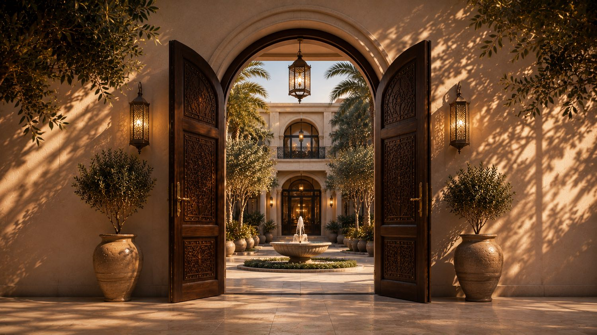
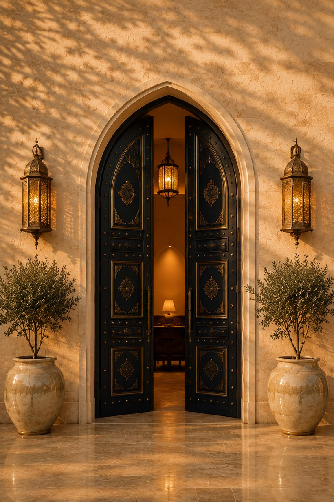
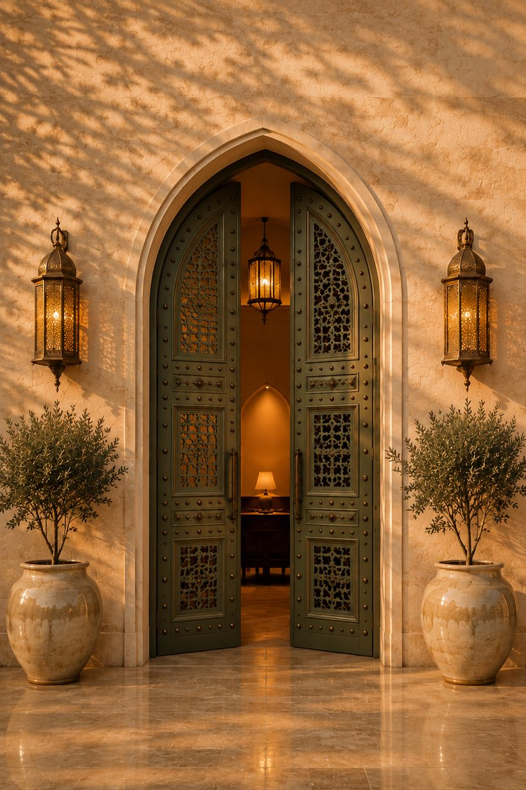
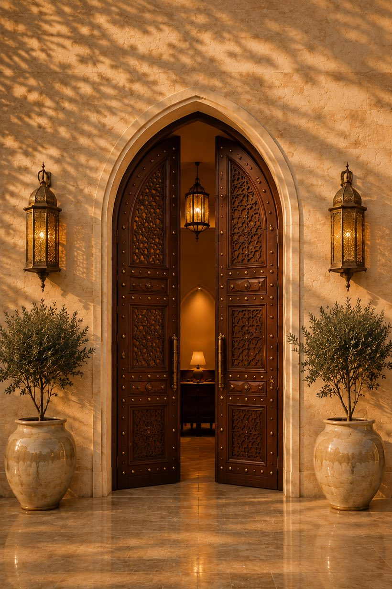
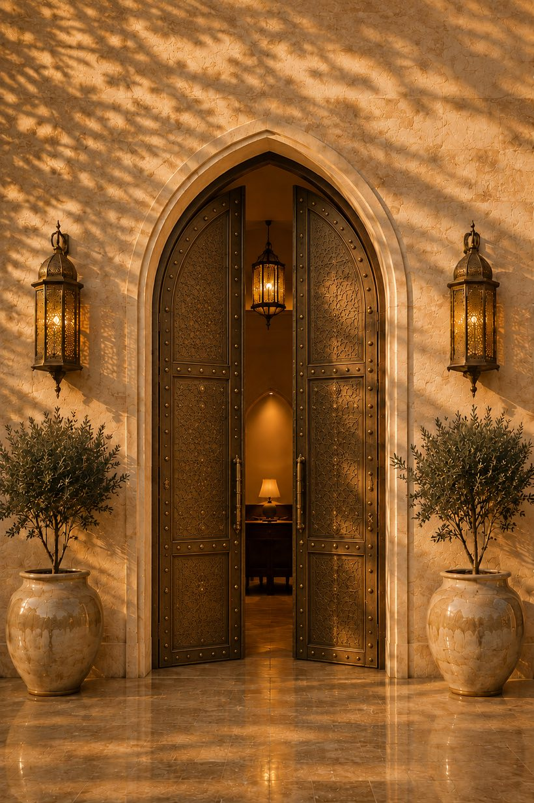
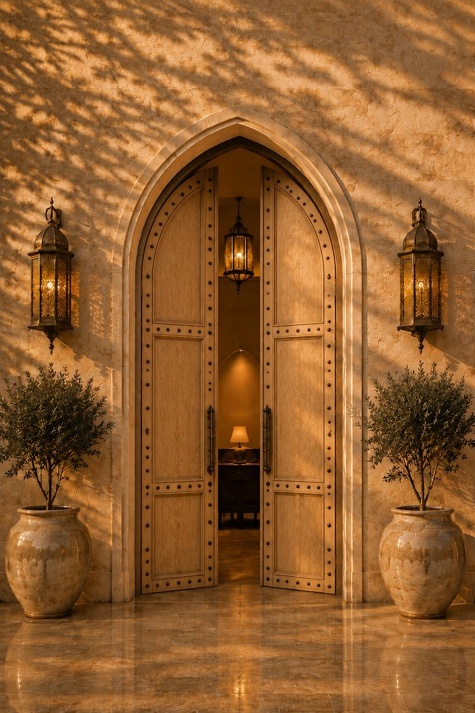

Strategic relations · Brokerage · Communicationsعلاقات استراتيجية · وساطة · اتصال
We don't just open doors. We position you in the right rooms.لا نكتفي بفتح الأبواب. بل نضعك في المكان المناسب، مع الأشخاص المناسبين.
A Saudi strategic-relations firm connecting people, organizations, and opportunity across the Kingdom and the world — with discretion, credibility, and cultural intelligence.شركة سعودية للعلاقات الاستراتيجية تربط الأشخاص والجهات والفرص داخل المملكة وحول العالم — بخصوصية وموثوقية وفهمٍ ثقافي عميق.
Five thresholdsخمسة مداخلRelations & Representationالعلاقات والتمثيل
How you are seen, how you are introduced, and who speaks for you.كيف تُرى، وكيف تُقدَّم، ومن يتحدث باسمك.
- 01٠١Strategic PR & Communicationsالعلاقات العامة الاستراتيجية والاتصالReputation positioning, strategic messaging, and professional representation.بناء السمعة، وإدارة الرسائل، والتمثيل المهني.
- 02٠٢Government & Institutional Relationsالعلاقات الحكومية والمؤسسيةEngaging institutions and senior stakeholders with the right protocol.التواصل مع الجهات المؤسسية وأصحاب القرار وفق البروتوكول الصحيح.
- 03٠٣Confidential Advisory & Private Networkingالاستشارات السرية والعلاقات الخاصةDiscreet advisory, private meetings, and curated networking.استشارات بسرية عالية، واجتماعات خاصة، وشبكة علاقات منتقاة.

Brokerage & Deal Facilitationالوساطة وتسهيل الصفقات
Finding the other side of the table, and getting both sides into the room.إيجاد الطرف الآخر للطاولة، وجمع الطرفين في غرفة واحدة.
- 04٠٤Commercial Brokerage & Intermediationالوساطة التجارية والربط بين الأعمالConnecting companies, investors, suppliers, partners, and decision-makers.ربط الشركات والمستثمرين والموردين والشركاء وصنّاع القرار.
- 05٠٥Real Estate Brokerage & Propertyالوساطة العقارية والفرص العقاريةIntroductions between owners, investors, buyers, and developers.التعريف بين الملاك والمستثمرين والمشترين والمطورين.
- 06٠٦High-Level Introductions & Deal Facilitationالتعريف رفيع المستوى وتسهيل الصفقاتMoving credible opportunities toward productive discussions.تحويل الفرص الجادة إلى مباحثات عملية.

Growth & Market Entryالنمو ودخول السوق
Arriving in the Kingdom — or growing once you are already here.الوصول إلى المملكة، أو النمو بعد أن تصل.
- 07٠٧Business Development & Partnershipsتطوير الأعمال والشراكات الاستراتيجيةOpportunities, partners, and collaboration pathways for sustainable growth.الفرص والشركاء ومسارات التعاون التي تدعم النمو المستدام.
- 08٠٨Market Entry & Local Representationدخول السوق والتمثيل المحليLocal representation and strategic guidance for international businesses.التمثيل المحلي والتوجيه الاستراتيجي للشركات الدولية.

Five principles. No exceptions.خمسة مبادئ. بلا استثناء.
How every engagement is run, whichever room it starts in.كيف تُدار كل مهمة، أيًّا كانت الغرفة التي تبدأ منها.
- I١Discretionالخصوصية
- II٢Relevanceالملاءمة
- III٣Cultural Intelligenceالفهم الثقافي
- IV٤Relationship-Drivenبناء العلاقات
- V٥Results-Orientedالتركيز على النتائج

How engagements are governed.كيف تُدار التعاقدات.
Confidentiality, client acceptance, conflicts, and how client data is handled.السرية، وقبول العملاء، وتعارض المصالح، وكيفية التعامل مع بيانات العميل.
In preparation — not publishedقيد الإعداد — غير منشورة
Which room do you need to be in?أي غرفةٍ تحتاج أن تكون فيها؟
Tell us what you are trying to reach. Every engagement starts privately, and stays that way.أخبرنا بما تحاول الوصول إليه. كل تعاون يبدأ بسرية، ويبقى كذلك.
Or directly — أو مباشرة — info@darqash.com · WhatsAppواتساب · +966 54 611 7177